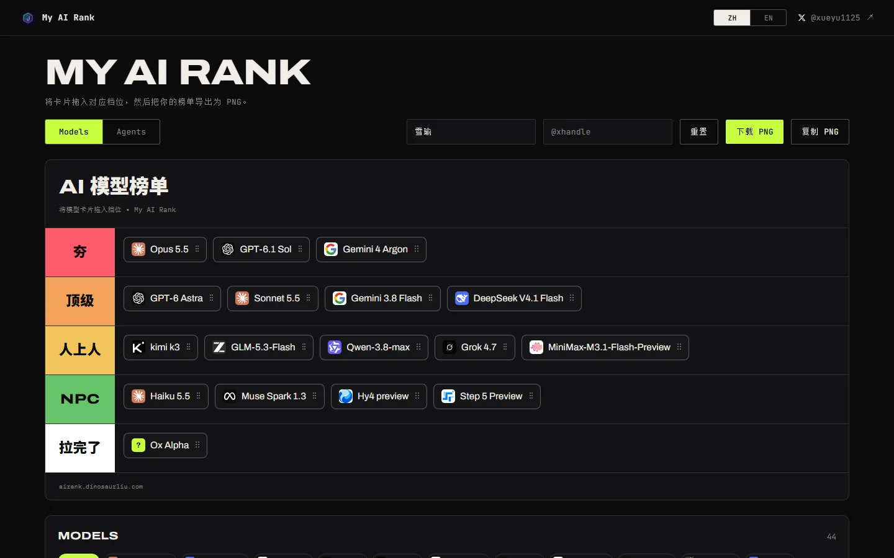
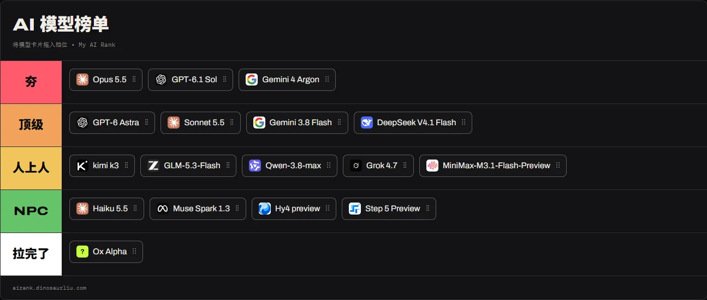

拖拽分级
把卡片拖进档位，同一档内也能拖动换位，周围卡片会平滑让位。
Interactive tool · Web · 中 / EN
把常用的大模型和编程 Agent 拖进不同档位，写上你的名字，一键导出一张适合发到社交平台的 PNG 榜单图。

01 / 功能
不用注册，不用安装。所有操作都在一个页面里完成。
把卡片拖进档位，同一档内也能拖动换位，周围卡片会平滑让位。
AI 模型和 AI Agent 各一份，切换互不影响。候选池按厂商筛选。
新模型刚发布、列表里还没有？自己加一张卡片，选好厂商就行。
下载 PNG 或直接复制到剪贴板，图上带着你的名字和 X 账号。
02 / 分享
榜单本来就是主观的。My AI Rank 只负责把你的判断排得好看，导出的图片和页面上看到的一模一样。

03 / 数据与隐私
04 / 开始使用
花一分钟排出来，发给朋友看看他们同不同意。